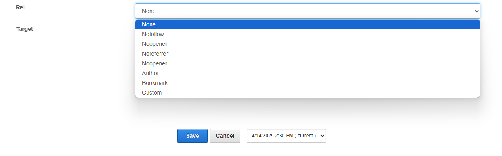
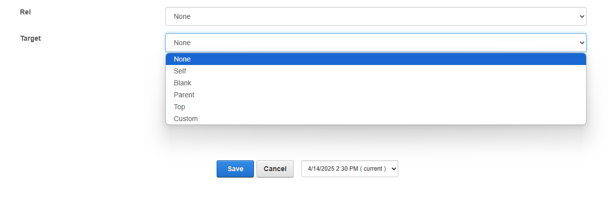
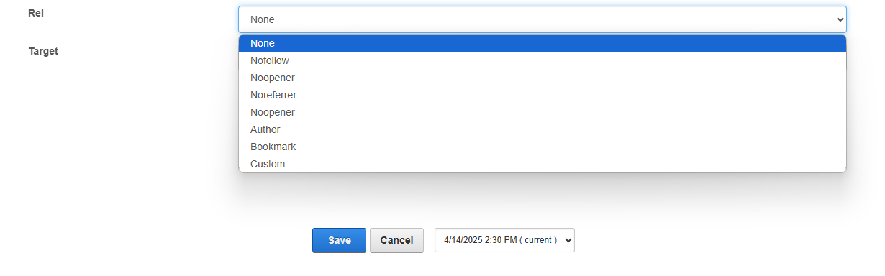
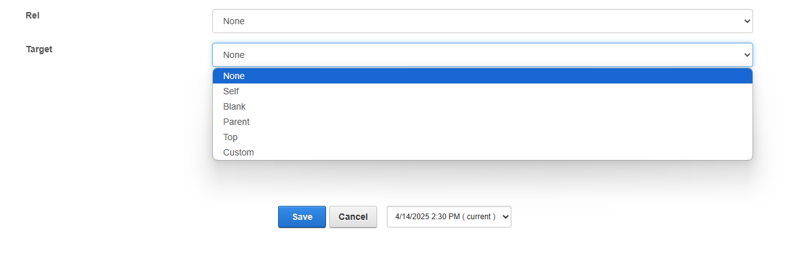

Porto-Buttons Documentation
Table of Contents
Overview
The Porto-Buttons component allows you to insert buttons in any desired location within your layout, providing extensive customization options. You can modify the text, color, size, and style to match your interface. While Porto defines the button’s appearance and behavior, its implementation is managed through OpenContent for greater flexibility.
For more details, check out the Porto-Buttons repository on GitHub or the Porto documentation.
Usage Example
Edit
 



Properties
| Property | Data Type | Description |
|---|---|---|
| Module Title | String | Used to define the title of the module. This title is displayed in the DNN administration interface to help identify the module. |
| Module Anchor | String | Used to create anchor links on the page. This allows users to link directly to the module using a unique identifier. Only letters, numbers, and hyphens are allowed. |
| Button Text | String | Defines the text displayed on the button. |
| Icon | String | Allows you to add an icon from FontAwesome. |
| Link | Url | Specifies the URL the button will navigate to when clicked. |
| Rel | Select |
Specifies the relationship between the current document and the linked document. Options
include:
|
| CustomRel | String | Allows a custom value for the rel attribute when "custom" is selected in Rel. |
| Target | Select |
Specifies where to open the linked document. Options include:
|
| CustomTarget | String | Allows a custom value for the target attribute when "custom" is selected in Target.
|
Settings


Settings Properties
| Property | Data Type | Description |
|---|---|---|
| Button Color | Select |
Select a color theme for the button. Options include:
|
| Button Size | Select |
Choose from different button sizes. Options include:
|
| Button Style | Select |
Set the visual style of the button. Options include:
|
| Button Align | Select |
Align the button within its container. Options include:
|
| MarginTop | Select | Defines the top margin of the paragraph. Options include mt-0, mt-1,
mt-2, mt-3, mt-4, mt-5, and
mt-auto.
|
| MarginBottom | Select | Defines the bottom margin of the paragraph. Options include mb-0, mb-1,
mb-2, mb-3, mb-4, mb-5, and
mb-auto.
|
| PaddingTop | Select | Defines the top padding of the paragraph. Options include pt-0, pt-1,
pt-2, pt-3, pt-4, pt-5, and
pt-auto.
|
| PaddingBottom | Select | Defines the bottom padding of the paragraph. Options include pb-0, pb-1,
pb-2, pb-3, pb-4, pb-5, and
pb-auto.
|
Views

Notes
Note: To ensure the Porto-Buttons component works as expected, please
consider the following:
- Ensure that all required properties, such as
Button Text,Link, andButton Color, are properly configured. - When using custom values for
RelorTarget, make sure the correspondingCustomRelorCustomTargetfields are filled in. - Verify that the selected
Button Color,Button Size,Button Style, andButton Alignmatch the design and layout requirements of your page. - Icons should be selected from a valid source, such as FontAwesome, and the class
name should be entered correctly in the
Iconfield. - Ensure that the
Linkfield contains a valid URL to avoid broken links. - Test the button's appearance and functionality across different devices and browsers to ensure compatibility.